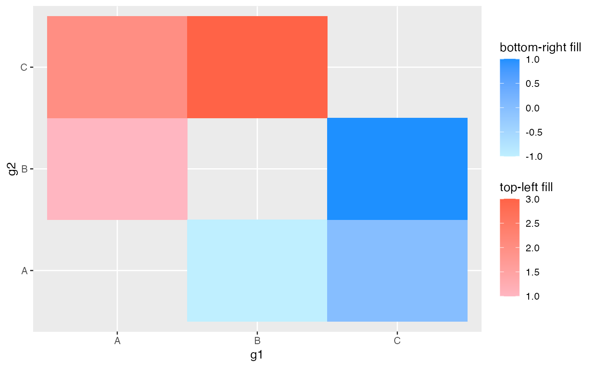

This is a this wrapper around continuous_scale() from
the ggplot2 package. It is generally best to call this function
implicitly using one of the wrappers that have the general naming
scheme of scale_*_tl/br_* (such as scale_fill_tl_gradient).
continuous_scale_asym(aesthetics, scale_name, palette, na.value, guide, ...)
| aesthetics | The names of the aesthetics that this scale works with |
|---|---|
| scale_name | The name of the scale |
| palette | A palette function that when called with a numeric vector with values between 0 and 1 returns the corresponding values in the range the scale maps to. |
| na.value | Missing values will be replaced with this value. |
| guide | A function used to create a guide or its name. See guides() for more info. |
| ... | other input is passed on to |
a scales object FINISH THIS
library(tibble) library(ggplot2) tib <- tibble(g1 = c("A", "A", "B"), g2 = c("B", "C", "C"), val_1 = c(1, 2, 3), val_2 = c(-1, 0, 1)) tib#> # A tibble: 3 x 4 #> g1 g2 val_1 val_2 #> <chr> <chr> <dbl> <dbl> #> 1 A B 1 -1 #> 2 A C 2 0 #> 3 B C 3 1ggplot(tib) + geom_asymmat(aes(x = g1, y = g2, fill_tl = val_1, fill_br = val_2)) + scale_fill_br_gradient(low = "lightblue1", high = "dodgerblue") + scale_fill_tl_gradient(low = "lightpink", high = "tomato") + labs(fill_tl = "top-left fill", fill_br = "bottom-right fill")